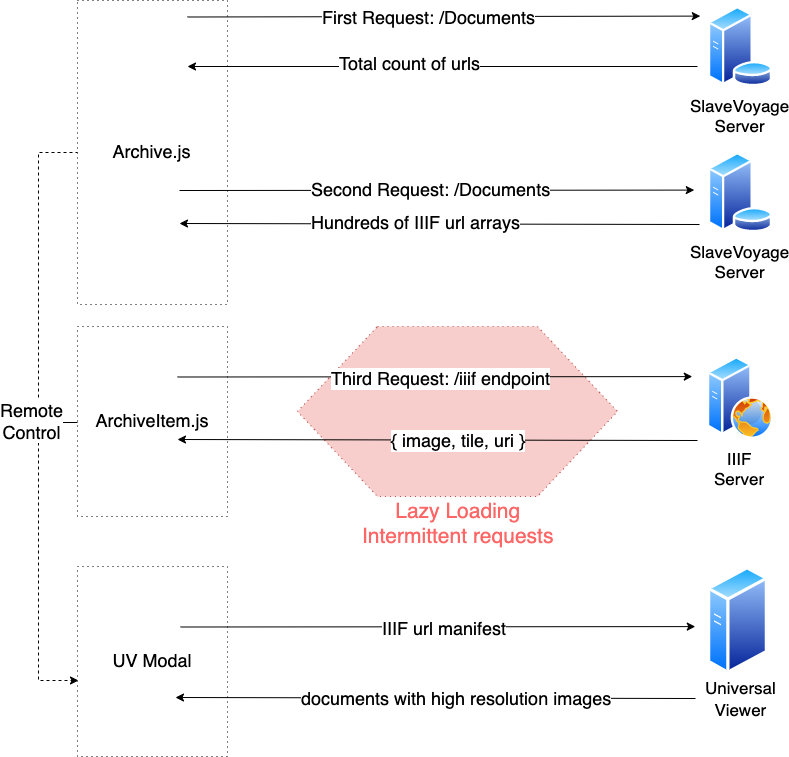

Overview
Documents are used to provide deep insight into SlaveVoyage archives
Features
- Capable of fetching and presenting IIIF pictures
- Integrated Universal Viewer with SlaveVoyage's React framework
- Handling with IIIF API 3.0's squaring pre-process for uniformed photo size
- Responsive flexbox layouts for devices of different screen size
- LazyLoading in multi-round api fetching to lift application performance
Package Importing
- Universal Viewer for IIIF document support
npm install universalviewer --save
/*To Use:*/
import "universalviewer/dist/esm/index.css";
import { init } from "universalviewer";
- Lazy Loading package import
npm i --save react-lazy-load-image-component
/*To Use:*/
import {
LazyLoadImage,
trackWindowScroll
} from "react-lazy-load-image-component";
import "react-lazy-load-image-component/src/effects/opacity.css";
Data fetching
-
Overall 3 rounds of api requests are called on different servers to finish thumbnail gallery rendering
-
Extra 1 round of UniversalViewer manifest feeding is executed to get document details

Universal Viewer config
Due to inactivity in open-source maintenance, importing default css from universalviewer will lead to render disorder. We've reorganized UV component and warp it with Modal, for poping-up use.
function useUniversalViewer(ref, options) {
const [uv, setUv] = useState();
useLayoutEffect(() => {
const currentUv = init(ref.current, options);
setUv(currentUv);
return () => {
currentUv.dispose();
};
}, []);
return uv;
}
const UV = ({ manifest, parentWidth }) => {
const el = useRef();
const viewer = useUniversalViewer(
el,
{
manifest,
}
);
return <div ref={el}
className="uv"
style={{
width: "50vw",
height: "50vh"
}}
/>;
};
LazyLoading Wrapping
By warpping each ArchiveItem with trackWindowScroll , all photoes are anchored with accurate screen coordinate.
In this way, our application can keep track of users' "view region" thus will only send new fetch requests to backend when the screen is to leave the last region boundry.
/*external calling code in Archive.js*/
{apiUrl.map((item,index) => {
return <ArchiveItem scrollPosition={window.scrollY}/>
})}
/*internal interface exposure*/
function ArchiveItem(props){
const { scrollPosition, ....} = props
return ...
}
export default trackWindowScroll(ArchiveItem);
we also use LayLoading in other structures, see LazyLoading_In_Methods
Props
| Prop | Type | Default | Description |
|---|---|---|---|
| handleOpen | Function | Functions to be called after clicking the thumbnail text links. It will switch on the UV modal for high resolution picture manifest fetching | |
| iifUrl | String | Link that UV modal need as a manifest for next-step IIIF endpoint communication | |
| scrollPosition | Object | Object containing coordiate information with the curent window scroll position. Required. |